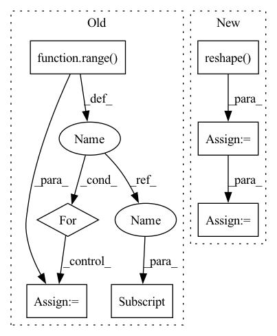

Pattern ID :7033
Before Change
def _calc(fn_input: torch.Tensor, sequence_input: torch.Tensor, linear_param: torch.Tensor, depth: int):
out = fn_input
for idx in range( depth):
out = _single_calc(out, sequence_input, linear_param[idx] )
return out
After Change
features_sqrt = int(fn_input.size(2))
batch = int(fn_input.size(0))
features = int(features_sqrt ** 2)
fn_input = fn_input.reshape( batch, features)
fn_input = _activate_norm(fn_input)
b = torch.mm(fn_input, linear_param_a)
c = torch.mm(sequence_input, linear_param_b)
o = _activate_norm(b * c)In pattern: SUPERPATTERN
Frequency: 3
Non-data size: 7
Instances Fragment ID: 23408231
Project Name: homebrewnlp/homebrewnlp
Commit Name: e1b260e4f3e6f7890e180ad3579dc16279f0e115
Time: 2021-08-09
Author: 39779310+ClashLuke@users.noreply.github.com
File Name: module.py
M Class Name: AnonimousClass
N Class Name: AnonimousClass
M Method Name: _calc(5)
N Method Name: _calc(4)
M Parent Class:
N Parent Class:
M File Name: module.py
N File Name: module.py
M Start Line: 23
M End Line: 26
N Start Line: 13
N End Line: 24
Before Change
def _calc(fn_input: torch.Tensor, sequence_input: torch.Tensor, linear_param: torch.Tensor, depth: int):
out = fn_input
for idx in range( depth):
out = _single_calc(out, sequence_input, linear_param[idx] )
return out
After Change
features_sqrt = int(fn_input.size(2))
batch = int(fn_input.size(0))
features = int(features_sqrt ** 2)
fn_input = fn_input.reshape( batch, features)
fn_input = _activate_norm(fn_input)
b = torch.mm(fn_input, linear_param_a)
c = torch.mm(sequence_input, linear_param_b)
o = _activate_norm(b * c)
o = torch.mm(o, linear_param_c) Fragment ID: 23408230
Project Name: homebrewnlp/homebrewnlp
Commit Name: e1b260e4f3e6f7890e180ad3579dc16279f0e115
Time: 2021-08-09
Author: 39779310+ClashLuke@users.noreply.github.com
File Name: module.py
M Class Name: AnonimousClass
N Class Name: AnonimousClass
M Method Name: _calc(5)
N Method Name: _calc(4)
M Parent Class:
N Parent Class:
M File Name: module.py
N File Name: module.py
M Start Line: 23
M End Line: 26
N Start Line: 13
N End Line: 24
Before Change
// 创建一副新图，并根据每个像素点的种类赋予颜色
//------------------------------------------------//
seg_img = np.zeros((np.shape(pr)[0], np.shape(pr)[1], 3))
for c in range( self.num_classes):
seg_img[:,:,0] += ((pr[:,: ] == c )*( self.colors[c][0] )).astype("uint8")
seg_img[:,:,1] += ((pr[:,: ] == c )*( self.colors[c] [1] )).astype("uint8")
seg_img[:,:,2] += ((pr[:,: ] == c )*( self.colors[c][2] )).astype("uint8")
//------------------------------------------------//
After Change
// seg_img[:, :, 0] += ((pr[:, :] == c ) * self.colors[c][0]).astype("uint8")
// seg_img[:, :, 1] += ((pr[:, :] == c ) * self.colors[c][1]).astype("uint8")
// seg_img[:, :, 2] += ((pr[:, :] == c ) * self.colors[c][2]).astype("uint8")
seg_img = np.reshape(np.array(self.colors, np.uint8)[np.reshape( pr, [-1]) ], [orininal_h, orininal_w, -1])
//------------------------------------------------//
// 将新图片转换成Image的形式
//------------------------------------------------//
image = Image.fromarray(np.uint8(seg_img))
elif self.mix_type == 2:
seg_img = (np.expand_dims(pr != 0, -1) * np.array(old_img, np.float32)).astype("uint8")
Fragment ID: 23408237
Project Name: bubbliiiing/pspnet-pytorch
Commit Name: 373340e315d6e9a029041ec293673c06c3c1cb7e
Time: 2022-03-04
Author: 3323290568@qq.com
File Name: pspnet.py
M Class Name: PSPNet
N Class Name: PSPNet
M Method Name: detect_image(2)
N Method Name: detect_image(2)
M Parent Class: object
N Parent Class: object
M File Name: pspnet.py
N File Name: pspnet.py
M Start Line: 155
M End Line: 172
N Start Line: 115
N End Line: 190
Before Change
// 创建一副新图，并根据每个像素点的种类赋予颜色
//------------------------------------------------//
seg_img = np.zeros((np.shape(pr)[0], np.shape(pr)[1], 3))
for c in range( self.num_classes):
seg_img[:,:,0] += ((pr[:,: ] == c )*( self.colors[c][0] )).astype("uint8")
seg_img[:,:,1] += ((pr[:,: ] == c )*( self.colors[c][1] )).astype("uint8")
seg_img[:,:,2] += ((pr[:,: ] == c )*( self.colors[c] [2] )).astype("uint8")
//------------------------------------------------//
// 将新图片转换成Image的形式After Change
// seg_img[:, :, 0] += ((pr[:, :] == c ) * self.colors[c][0]).astype("uint8")
// seg_img[:, :, 1] += ((pr[:, :] == c ) * self.colors[c][1]).astype("uint8")
// seg_img[:, :, 2] += ((pr[:, :] == c ) * self.colors[c][2]).astype("uint8")
seg_img = np.reshape( np.array(self.colors, np.uint8)[np.reshape(pr, [-1])], [orininal_h, orininal_w, -1])
//------------------------------------------------//
// 将新图片转换成Image的形式
//------------------------------------------------//
image = Image.fromarray(np.uint8(seg_img))
elif self.mix_type == 2:
seg_img = (np.expand_dims(pr != 0, -1) * np.array(old_img, np.float32)).astype("uint8") Fragment ID: 23408248
Project Name: bubbliiiing/hrnet-pytorch
Commit Name: e53724ea45003d8acd5d8b5465fa97038d486824
Time: 2022-03-19
Author: 3323290568@qq.com
File Name: hrnet.py
M Class Name: HRnet_Segmentation
N Class Name: HRnet_Segmentation
M Method Name: detect_image(2)
N Method Name: detect_image(2)
M Parent Class: object
N Parent Class: object
M File Name: hrnet.py
N File Name: hrnet.py
M Start Line: 153
M End Line: 170
N Start Line: 113
N End Line: 188